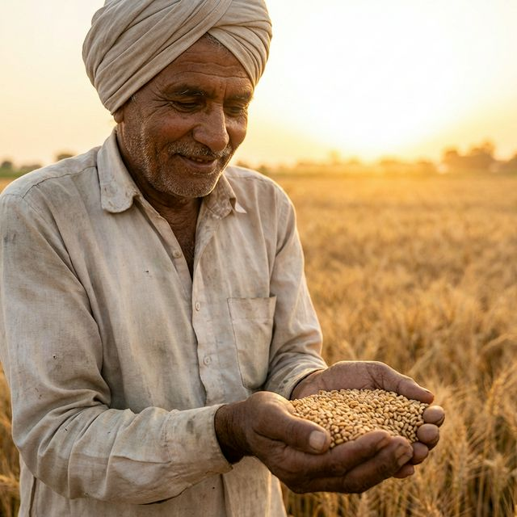

FUTURE OF AGRICULTURE
Intelligence for your Farm.
Harness AI for Higher Yields.
The next generation of farming starts with data. Monitor crop health, predict yields with 98% accuracy, and optimize resource usage through AgriSage.ai.



Real-time Analysis
Nitrogen Level: 95% (Optimal)